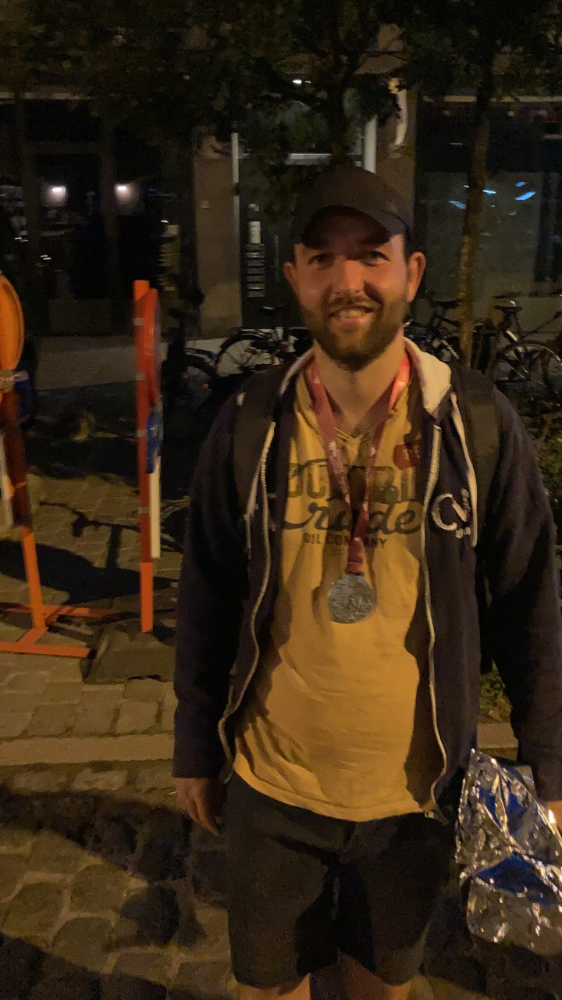

About me...
So, about me. First some facts and a photo.

- Born 18/03/1989
- Residence: Vosselaar
- Employed: Developer Federal Public Service Finance
- Married
- 3 kids
- Sport enthousiast
Behind the facts
So, whats behind the facts... I was born and raised in the quit Kempen region near Turnhout. I went to secundary school in Turnhout and got my bachelor degree in social work in Geel.
After my studies I started working as a counselor for the union (ACV-CSC). Most of the time I helped people to file for unemployment benefits, but a lot of the job involved informing people about their rights concerninng their work and employer. After a couple of years I was looking for a new opportunity. The rate of unemployment was getting less so I started the follow lessons in the evening to become a developer. I also switched my career from counseling to teaching. For the last two years I trained new collegues on the job and tried to get all collegues up to date with new legislation. I was still following programming lessons and when I got my degree there, I knew this was what I wanted to do so I prepared myself form a new career and... here I am.
Personnaly, I married in 2017. Me and my wife have three kids, the oldest, Floris, is 5, the middle one, Jules is 3, and the youngest sprout, Felien is 2 months old. Always something to do when I'm at home.
When I'm not entertaining my kids. I like to sport. I try to run 3 times a week, I play football and I try to bike at least once a week. I recently ran my First half marathon in Antwerp as pictured on the right.
So that's all for now. Feel free to ask away if you have any questions.